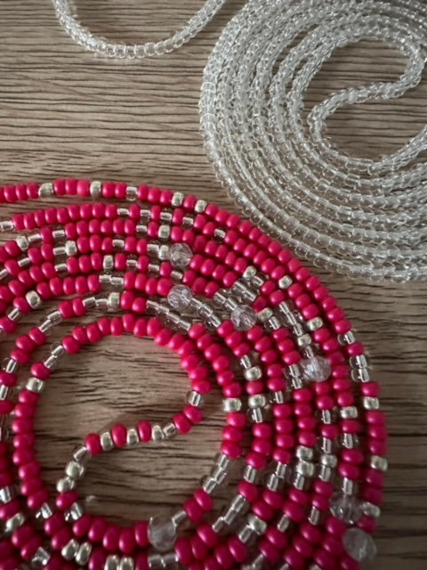
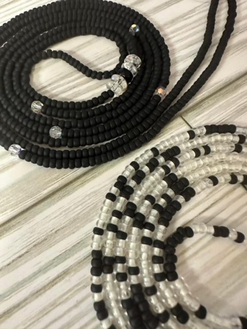
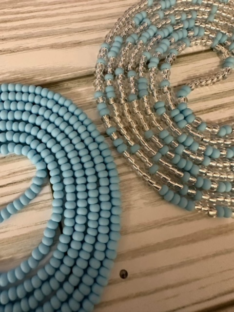
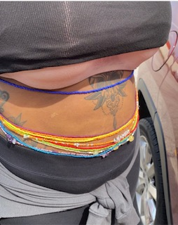

Microsoft Edge
Microsoft Edge is a web browser developed by Microsoft, released in 2015. Microsoft Edge replaced Internet Explorer.
ALL ABOUT MY SMALL BUSINESS
I am the owner and founder of Sweetly Adorned LLC.
I specialize in custom traditional waist bead creation and adornment.
I have been making these custom pieces for three years. I got into making waist beads because I am a frugal person by nature. A family member purchased some online and I loved the way they looked.
Instead of purchasing some myself, I said hey I could do that. I’m sure youtube university will teach me enough to create them.
After creating my first set my family members started to purchase them. Then their friends and before I knew I had a profitable side hustle.
HOW MY BUSINESS TOOK OFF?
Once I realized this could be a successful business endeavor. I didn’t want to do it just for the money. I wanted to pay homage to the origins. I began to get more serious about it and learn the origin and spiritual or religious benefits of them. I wanted to be able to teach others about the benefits both spiritual and health wise. Once I mastered bead quality, and being able to explain the benefits of traditional tie-on strands I was able to turn that into a successful small business.WHAT ARE WAIST BEADS?
  Waist beads are tiny ornaments that can be made from glass, crystal stone, wood or even metal. These beads are traditionally strung together on a thread or twine, knotted or secured with a clasp, and made custom to be worn around a woman or man's waist. To find out more visit the link below and check out the article.
WHY ARE WAIST BEADS WORN?
Waist beads can be traced to Africa, where many believe they originated from Egypt. Then, they were known as “girdles” and were worn by women as a status symbol. In West Africa, particularly Nigeria, they were worn by women from the different tribes years before the colonial era. These beads were worn to celebrate womanhood, sexuality, femininity, fertility, healing, spirituality, body shaping, protection, and wealth. Waist beads have held an important place in African tradition for centuries. Whether hidden under clothes or worn over them, the sound of these beads is mesmerising, and the colors draw the eyes as the wearer moves they are traditional African accessory that consists of small glass beads on a string or wire worn around the waist or hips. The accessories are made in different colors and lengths. They hold a significant purpose in Africa; over the years, these beads have become popular globally. Waist beads are used for femininity, spirituality and weight management. Anybody can wear them. The only ask is that you know and respect the meaning behind them. They are not a fad or belly beads or any other americanized meaning. They are intentianal and have deep meaning to many people around the world.
Visit skabash for more details
Microsoft Edge is a web browser developed by Microsoft, released in 2015. Microsoft Edge replaced Internet Explorer.